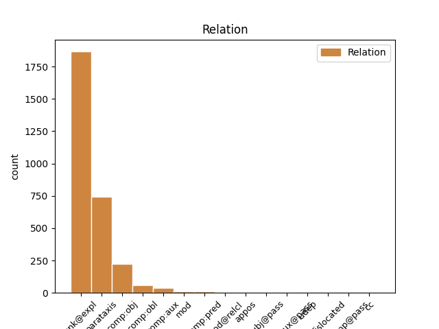
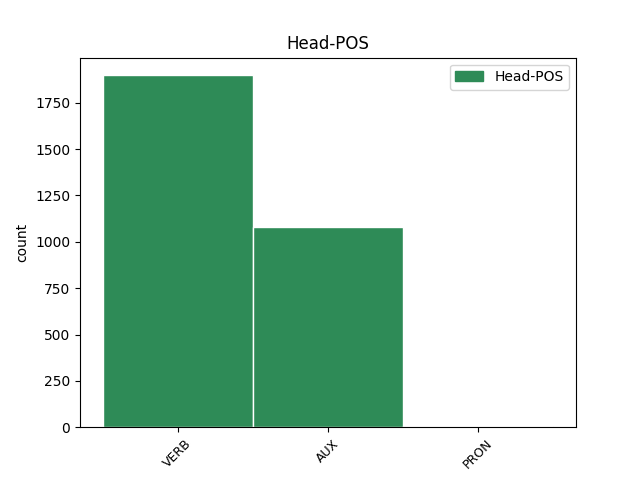
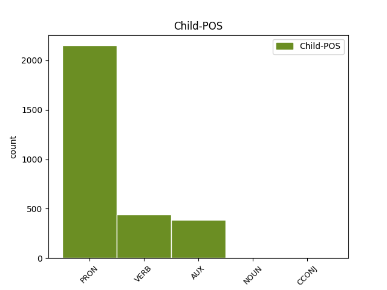

Distribution of features within this leaf



Agreement Rules sorted by frequency.
- When the dependent token is the unk@expl(unk@expl) of the head token,
1 La _ _ _ _ 0 _ _ _
2 ragazza _ _ _ _ 0 _ _ _
3 , _ _ _ _ 0 _ _ _
4 di _ _ _ _ 0 _ _ _
5 l' _ _ _ _ 0 _ _ _
6 apparente _ _ _ _ 0 _ _ _
7 età _ _ _ _ 0 _ _ _
8 di _ _ _ _ 0 _ _ _
9 vent' _ _ _ _ 0 _ _ _
10 anni _ _ _ _ 0 _ _ _
11 , _ _ _ _ 0 _ _ _
12 si si PRON PC Clitic=Yes|Gender=Masc|Person=3|PronType=Prs 13 unk@expl _ _
13 è essere AUX VA Mood=Ind|Number=Sing|Person=3|Tense=Pres|VerbForm=Fin 0 _ _ _
14 impiccata _ _ _ _ 0 _ _ _
15 ad _ _ _ _ 0 _ _ _
16 un _ _ _ _ 0 _ _ _
17 albero _ _ _ _ 0 _ _ _
18 con _ _ _ _ 0 _ _ _
19 una _ _ _ _ 0 _ _ _
20 striscia _ _ _ _ 0 _ _ _
21 ricavata _ _ _ _ 0 _ _ _
22 da _ _ _ _ 0 _ _ _
23 una _ _ _ _ 0 _ _ _
24 coperta _ _ _ _ 0 _ _ _
25 . _ _ _ _ 0 _ _ _
1 A _ _ _ _ 0 _ _ _
2 questi _ _ _ _ 0 _ _ _
3 finanziamenti _ _ _ _ 0 _ _ _
4 andrebbero andare AUX VM Mood=Cnd|Number=Plur|Person=3|Tense=Pres|VerbForm=Fin 0 _ _ _
5 aggiunti _ _ _ _ 0 _ _ _
6 , _ _ _ _ 0 _ _ _
7 sostiene sostenere VERB V Mood=Ind|Number=Sing|Person=3|Tense=Pres|VerbForm=Fin 4 parataxis _ _
8 D' _ _ _ _ 0 _ _ _
9 Antoni _ _ _ _ 0 _ _ _
10 , _ _ _ _ 0 _ _ _
11 i _ _ _ _ 0 _ _ _
12 400 _ _ _ _ 0 _ _ _
13 miliardi _ _ _ _ 0 _ _ _
14 destinati _ _ _ _ 0 _ _ _
15 a _ _ _ _ 0 _ _ _
16 la _ _ _ _ 0 _ _ _
17 detrazione _ _ _ _ 0 _ _ _
18 fiscale _ _ _ _ 0 _ _ _
19 per _ _ _ _ 0 _ _ _
20 il _ _ _ _ 0 _ _ _
21 terzo _ _ _ _ 0 _ _ _
22 figlio _ _ _ _ 0 _ _ _
23 . _ _ _ _ 0 _ _ _
1 Ricostruzione _ _ _ _ 0 _ _ _
2 di _ _ _ _ 0 _ _ _
3 la _ _ _ _ 0 _ _ _
4 Berlino _ _ _ _ 0 _ _ _
5 di _ _ _ _ 0 _ _ _
6 il _ _ _ _ 0 _ _ _
7 futuro _ _ _ _ 0 _ _ _
8 , _ _ _ _ 0 _ _ _
9 Alexanderplatz _ _ _ _ 0 _ _ _
10 Bonn _ _ _ _ 0 _ _ _
11 - _ _ _ _ 0 _ _ _
12 molti _ _ _ _ 0 _ _ _
13 la _ _ _ _ 0 _ _ _
14 conoscono _ _ _ _ 0 _ _ _
15 , _ _ _ _ 0 _ _ _
16 ma _ _ _ _ 0 _ _ _
17 pochi _ _ _ _ 0 _ _ _
18 la la PRON PC Clitic=Yes|Gender=Fem|Number=Sing|Person=3|PronType=Prs 19 comp:obj _ _
19 riconosceranno riconoscere VERB V Mood=Ind|Number=Plur|Person=3|Tense=Fut|VerbForm=Fin 0 _ _ _
20 in _ _ _ _ 0 _ _ _
21 la _ _ _ _ 0 _ _ _
22 grande _ _ _ _ 0 _ _ _
23 illustrazione _ _ _ _ 0 _ _ _
24 che _ _ _ _ 0 _ _ _
25 pubblichiamo _ _ _ _ 0 _ _ _
26 , _ _ _ _ 0 _ _ _
27 tratta _ _ _ _ 0 _ _ _
28 da _ _ _ _ 0 _ _ _
29 il _ _ _ _ 0 _ _ _
30 numero _ _ _ _ 0 _ _ _
31 speciale _ _ _ _ 0 _ _ _
32 consacrato _ _ _ _ 0 _ _ _
33 da _ _ _ _ 0 _ _ _
34 Stern _ _ _ _ 0 _ _ _
35 a _ _ _ _ 0 _ _ _
36 la _ _ _ _ 0 _ _ _
37 Berlino _ _ _ _ 0 _ _ _
38 di _ _ _ _ 0 _ _ _
39 il _ _ _ _ 0 _ _ _
40 futuro _ _ _ _ 0 _ _ _
41 . _ _ _ _ 0 _ _ _
1 D' _ _ _ _ 0 _ _ _
2 improvviso _ _ _ _ 0 _ _ _
3 la _ _ _ _ 0 _ _ _
4 destra _ _ _ _ 0 _ _ _
5 s' _ _ _ _ 0 _ _ _
6 è essere AUX VA Mood=Ind|Number=Sing|Person=3|Tense=Pres|VerbForm=Fin 0 _ _ _
7 desta destare VERB V Mood=Ind|Number=Sing|Person=3|Tense=Pres|VerbForm=Fin 6 comp:aux _ SpaceAfter=No
8 . _ _ _ _ 0 _ _ _
1 Sì _ _ _ _ 0 _ _ _
2 , _ _ _ _ 0 _ _ _
3 è essere AUX VA Mood=Ind|Number=Sing|Person=3|Tense=Pres|VerbForm=Fin 0 _ _ _
4 proprio _ _ _ _ 0 _ _ _
5 lei lei PRON PE Number=Sing|Person=3|PronType=Prs 3 comp:pred _ SpaceAfter=No
6 , _ _ _ _ 0 _ _ _
7 la _ _ _ _ 0 _ _ _
8 Alexanderplatz _ _ _ _ 0 _ _ _
9 che _ _ _ _ 0 _ _ _
10 Doblin _ _ _ _ 0 _ _ _
11 rese _ _ _ _ 0 _ _ _
12 famosa _ _ _ _ 0 _ _ _
13 in _ _ _ _ 0 _ _ _
14 le _ _ _ _ 0 _ _ _
15 sue _ _ _ _ 0 _ _ _
16 pagine _ _ _ _ 0 _ _ _
17 , _ _ _ _ 0 _ _ _
18 dedicate _ _ _ _ 0 _ _ _
19 a _ _ _ _ 0 _ _ _
20 la _ _ _ _ 0 _ _ _
21 piccola _ _ _ _ 0 _ _ _
22 gente _ _ _ _ 0 _ _ _
23 come _ _ _ _ 0 _ _ _
24 " _ _ _ _ 0 _ _ _
25 les _ _ _ _ 0 _ _ _
26 enfants _ _ _ _ 0 _ _ _
27 du _ _ _ _ 0 _ _ _
28 paradis _ _ _ _ 0 _ _ _
29 " _ _ _ _ 0 _ _ _
30 di _ _ _ _ 0 _ _ _
31 Carné _ _ _ _ 0 _ _ _
32 , _ _ _ _ 0 _ _ _
33 la _ _ _ _ 0 _ _ _
34 Alexanderplatz _ _ _ _ 0 _ _ _
35 dove _ _ _ _ 0 _ _ _
36 i _ _ _ _ 0 _ _ _
37 cortei _ _ _ _ 0 _ _ _
38 di _ _ _ _ 0 _ _ _
39 l' _ _ _ _ 0 _ _ _
40 89 _ _ _ _ 0 _ _ _
41 segnarono _ _ _ _ 0 _ _ _
42 la _ _ _ _ 0 _ _ _
43 caduta _ _ _ _ 0 _ _ _
44 di _ _ _ _ 0 _ _ _
45 i _ _ _ _ 0 _ _ _
46 successori _ _ _ _ 0 _ _ _
47 di _ _ _ _ 0 _ _ _
48 Honecker _ _ _ _ 0 _ _ _
49 . _ _ _ _ 0 _ _ _
1 Chi _ _ _ _ 0 _ _ _
2 lo _ _ _ _ 0 _ _ _
3 conosce conoscere VERB V Mood=Ind|Number=Sing|Person=3|Tense=Pres|VerbForm=Fin 5 mod@relcl _ _
4 lo _ _ _ _ 0 _ _ _
5 descrive descrivere VERB V Mood=Ind|Number=Sing|Person=3|Tense=Pres|VerbForm=Fin 0 _ _ _
6 come _ _ _ _ 0 _ _ _
7 un _ _ _ _ 0 _ _ _
8 segretario _ _ _ _ 0 _ _ _
9 generale _ _ _ _ 0 _ _ _
10 " _ _ _ _ 0 _ _ _
11 più _ _ _ _ 0 _ _ _
12 politico _ _ _ _ 0 _ _ _
13 che _ _ _ _ 0 _ _ _
14 amministratore _ _ _ _ 0 _ _ _
15 " _ _ _ _ 0 _ _ _
16 , _ _ _ _ 0 _ _ _
17 più _ _ _ _ 0 _ _ _
18 portato _ _ _ _ 0 _ _ _
19 cioè _ _ _ _ 0 _ _ _
20 a _ _ _ _ 0 _ _ _
21 la _ _ _ _ 0 _ _ _
22 costruzione _ _ _ _ 0 _ _ _
23 di _ _ _ _ 0 _ _ _
24 la _ _ _ _ 0 _ _ _
25 linea _ _ _ _ 0 _ _ _
26 di _ _ _ _ 0 _ _ _
27 politica _ _ _ _ 0 _ _ _
28 estera _ _ _ _ 0 _ _ _
29 che _ _ _ _ 0 _ _ _
30 a _ _ _ _ 0 _ _ _
31 la _ _ _ _ 0 _ _ _
32 gestione _ _ _ _ 0 _ _ _
33 . _ _ _ _ 0 _ _ _
1 " _ _ _ _ 0 _ _ _
2 questo _ _ _ _ 0 _ _ _
3 tipo _ _ _ _ 0 _ _ _
4 di _ _ _ _ 0 _ _ _
5 iniziative _ _ _ _ 0 _ _ _
6 non _ _ _ _ 0 _ _ _
7 aiutano aiutare VERB V Mood=Ind|Number=Plur|Person=3|Tense=Pres|VerbForm=Fin 0 _ _ _
8 proprio _ _ _ _ 0 _ _ _
9 a _ _ _ _ 0 _ _ _
10 risolvere _ _ _ _ 0 _ _ _
11 il _ _ _ _ 0 _ _ _
12 problema _ _ _ _ 0 _ _ _
13 " _ _ _ _ 0 _ _ _
14 , _ _ _ _ 0 _ _ _
15 ha avere AUX VA Mood=Ind|Number=Sing|Person=3|Tense=Pres|VerbForm=Fin 7 appos _ _
16 detto _ _ _ _ 0 _ _ _
17 il _ _ _ _ 0 _ _ _
18 portavoce _ _ _ _ 0 _ _ _
19 di _ _ _ _ 0 _ _ _
20 il _ _ _ _ 0 _ _ _
21 Ministero _ _ _ _ 0 _ _ _
22 Degli _ _ _ _ 0 _ _ _
23 Esteri _ _ _ _ 0 _ _ _
24 . _ _ _ _ 0 _ _ _
1 È _ _ _ _ 0 _ _ _
2 una _ _ _ _ 0 _ _ _
3 sorta _ _ _ _ 0 _ _ _
4 di _ _ _ _ 0 _ _ _
5 rigurgito _ _ _ _ 0 _ _ _
6 tardivo _ _ _ _ 0 _ _ _
7 di _ _ _ _ 0 _ _ _
8 orgoglio _ _ _ _ 0 _ _ _
9 di _ _ _ _ 0 _ _ _
10 un _ _ _ _ 0 _ _ _
11 mondo _ _ _ _ 0 _ _ _
12 che _ _ _ _ 0 _ _ _
13 ha _ _ _ _ 0 _ _ _
14 consentito _ _ _ _ 0 _ _ _
15 a _ _ _ _ 0 _ _ _
16 sé sé PRON PE Gender=Masc|Number=Sing|Person=3|PronType=Prs 0 _ _ _
17 stesso stesso PRON PE Gender=Masc|Number=Sing|Person=3|PronType=Prs 16 mod _ _
18 troppo _ _ _ _ 0 _ _ _
19 , _ _ _ _ 0 _ _ _
20 e _ _ _ _ 0 _ _ _
21 che _ _ _ _ 0 _ _ _
22 ora _ _ _ _ 0 _ _ _
23 comincia _ _ _ _ 0 _ _ _
24 a _ _ _ _ 0 _ _ _
25 soffrire _ _ _ _ 0 _ _ _
26 di _ _ _ _ 0 _ _ _
27 il _ _ _ _ 0 _ _ _
28 suo _ _ _ _ 0 _ _ _
29 mancato _ _ _ _ 0 _ _ _
30 rigore _ _ _ _ 0 _ _ _
31 . _ _ _ _ 0 _ _ _
1 Condizioni _ _ _ _ 0 _ _ _
2 che _ _ _ _ 0 _ _ _
3 gli gli PRON PC Clitic=Yes|Gender=Fem|Person=3|PronType=Prs 4 comp:obl _ _
4 permettono permettere VERB V Mood=Ind|Number=Plur|Person=3|Tense=Pres|VerbForm=Fin 0 _ _ _
5 di _ _ _ _ 0 _ _ _
6 vivere _ _ _ _ 0 _ _ _
7 , _ _ _ _ 0 _ _ _
8 ma _ _ _ _ 0 _ _ _
9 come _ _ _ _ 0 _ _ _
10 un _ _ _ _ 0 _ _ _
11 " _ _ _ _ 0 _ _ _
12 vegetale _ _ _ _ 0 _ _ _
13 " _ _ _ _ 0 _ _ _
14 . _ _ _ _ 0 _ _ _
1 Ma _ _ _ _ 0 _ _ _
2 a _ _ _ _ 0 _ _ _
3 nessuno _ _ _ _ 0 _ _ _
4 è _ _ _ _ 0 _ _ _
5 sfuggito _ _ _ _ 0 _ _ _
6 che _ _ _ _ 0 _ _ _
7 neanche _ _ _ _ 0 _ _ _
8 lui lui PRON PE Gender=Masc|Number=Sing|Person=3|PronType=Prs 9 subj@pass _ _
9 è essere AUX VA Mood=Ind|Number=Sing|Person=3|Tense=Pres|VerbForm=Fin 0 _ _ _
10 stato _ _ _ _ 0 _ _ _
11 mai _ _ _ _ 0 _ _ _
12 ammesso _ _ _ _ 0 _ _ _
13 in _ _ _ _ 0 _ _ _
14 la _ _ _ _ 0 _ _ _
15 stanza _ _ _ _ 0 _ _ _
16 d' _ _ _ _ 0 _ _ _
17 ospedale _ _ _ _ 0 _ _ _
18 di _ _ _ _ 0 _ _ _
19 Eltsin _ _ _ _ 0 _ _ _
20 e _ _ _ _ 0 _ _ _
21 i _ _ _ _ 0 _ _ _
22 suoi _ _ _ _ 0 _ _ _
23 contatti _ _ _ _ 0 _ _ _
24 con _ _ _ _ 0 _ _ _
25 il _ _ _ _ 0 _ _ _
26 presidente _ _ _ _ 0 _ _ _
27 , _ _ _ _ 0 _ _ _
28 in _ _ _ _ 0 _ _ _
29 questi _ _ _ _ 0 _ _ _
30 giorni _ _ _ _ 0 _ _ _
31 , _ _ _ _ 0 _ _ _
32 sono _ _ _ _ 0 _ _ _
33 stati _ _ _ _ 0 _ _ _
34 esclusivamente _ _ _ _ 0 _ _ _
35 telefonici _ _ _ _ 0 _ _ _
36 . _ _ _ _ 0 _ _ _
1 Badaloni _ _ _ _ 0 _ _ _
2 , _ _ _ _ 0 _ _ _
3 che _ _ _ _ 0 _ _ _
4 a _ _ _ _ 0 _ _ _
5 Saxa _ _ _ _ 0 _ _ _
6 Rubra _ _ _ _ 0 _ _ _
7 è _ _ _ _ 0 _ _ _
8 ancora _ _ _ _ 0 _ _ _
9 di _ _ _ _ 0 _ _ _
10 casa _ _ _ _ 0 _ _ _
11 , _ _ _ _ 0 _ _ _
12 se _ _ _ _ 0 _ _ _
13 ne _ _ _ _ 0 _ _ _
14 era _ _ _ _ 0 _ _ _
15 accorto _ _ _ _ 0 _ _ _
16 e _ _ _ _ 0 _ _ _
17 aveva avere AUX VA Mood=Ind|Number=Sing|Person=3|Tense=Imp|VerbForm=Fin 0 _ _ _
18 chiesto _ _ _ _ 0 _ _ _
19 lui lui PRON PE Gender=Masc|Number=Sing|Person=3|PronType=Prs 17 dislocated _ _
20 pure _ _ _ _ 0 _ _ _
21 le _ _ _ _ 0 _ _ _
22 telecamere _ _ _ _ 0 _ _ _
23 per _ _ _ _ 0 _ _ _
24 la _ _ _ _ 0 _ _ _
25 prima _ _ _ _ 0 _ _ _
26 occasione _ _ _ _ 0 _ _ _
27 utile _ _ _ _ 0 _ _ _
28 . _ _ _ _ 0 _ _ _
1 Un _ _ _ _ 0 _ _ _
2 rinvio _ _ _ _ 0 _ _ _
3 chiesto _ _ _ _ 0 _ _ _
4 da _ _ _ _ 0 _ _ _
5 Dotti _ _ _ _ 0 _ _ _
6 a _ _ _ _ 0 _ _ _
7 il _ _ _ _ 0 _ _ _
8 Presidente _ _ _ _ 0 _ _ _
9 di _ _ _ _ 0 _ _ _
10 la _ _ _ _ 0 _ _ _
11 Camera _ _ _ _ 0 _ _ _
12 Irene _ _ _ _ 0 _ _ _
13 Pivetti _ _ _ _ 0 _ _ _
14 : _ _ _ _ 0 _ _ _
15 in _ _ _ _ 0 _ _ _
16 presenza _ _ _ _ 0 _ _ _
17 di _ _ _ _ 0 _ _ _
18 i _ _ _ _ 0 _ _ _
19 lavori _ _ _ _ 0 _ _ _
20 di _ _ _ _ 0 _ _ _
21 l' _ _ _ _ 0 _ _ _
22 aula _ _ _ _ 0 _ _ _
23 ( _ _ _ _ 0 _ _ _
24 a _ _ _ _ 0 _ _ _
25 la _ _ _ _ 0 _ _ _
26 Camera _ _ _ _ 0 _ _ _
27 c' _ _ _ _ 0 _ _ _
28 è essere AUX VA Mood=Ind|Number=Sing|Person=3|Tense=Pres|VerbForm=Fin 43 udep _ _
29 in _ _ _ _ 0 _ _ _
30 discussione _ _ _ _ 0 _ _ _
31 la _ _ _ _ 0 _ _ _
32 fiducia _ _ _ _ 0 _ _ _
33 su _ _ _ _ 0 _ _ _
34 le _ _ _ _ 0 _ _ _
35 pensioni _ _ _ _ 0 _ _ _
36 ) _ _ _ _ 0 _ _ _
37 , _ _ _ _ 0 _ _ _
38 le _ _ _ _ 0 _ _ _
39 riunioni _ _ _ _ 0 _ _ _
40 di _ _ _ _ 0 _ _ _
41 le _ _ _ _ 0 _ _ _
42 commissioni _ _ _ _ 0 _ _ _
43 possono potere AUX VM Mood=Ind|Number=Plur|Person=3|Tense=Pres|VerbForm=Fin 0 _ _ _
44 svolger _ _ _ _ 0 _ _ _
45 si _ _ _ _ 0 _ _ _
46 solo _ _ _ _ 0 _ _ _
47 se _ _ _ _ 0 _ _ _
48 c' _ _ _ _ 0 _ _ _
49 è _ _ _ _ 0 _ _ _
50 il _ _ _ _ 0 _ _ _
51 consenso _ _ _ _ 0 _ _ _
52 di _ _ _ _ 0 _ _ _
53 tutti _ _ _ _ 0 _ _ _
54 i _ _ _ _ 0 _ _ _
55 gruppi _ _ _ _ 0 _ _ _
56 . _ _ _ _ 0 _ _ _
1 È _ _ _ _ 0 _ _ _
2 infatti _ _ _ _ 0 _ _ _
3 su _ _ _ _ 0 _ _ _
4 l' _ _ _ _ 0 _ _ _
5 efficienza _ _ _ _ 0 _ _ _
6 di _ _ _ _ 0 _ _ _
7 l' _ _ _ _ 0 _ _ _
8 ambiente _ _ _ _ 0 _ _ _
9 , _ _ _ _ 0 _ _ _
10 in _ _ _ _ 0 _ _ _
11 le _ _ _ _ 0 _ _ _
12 sue _ _ _ _ 0 _ _ _
13 componenti _ _ _ _ 0 _ _ _
14 infrastrutturali _ _ _ _ 0 _ _ _
15 , _ _ _ _ 0 _ _ _
16 organizzative _ _ _ _ 0 _ _ _
17 e _ _ _ _ 0 _ _ _
18 di _ _ _ _ 0 _ _ _
19 qualità _ _ _ _ 0 _ _ _
20 di _ _ _ _ 0 _ _ _
21 la _ _ _ _ 0 _ _ _
22 vita _ _ _ _ 0 _ _ _
23 , _ _ _ _ 0 _ _ _
24 che _ _ _ _ 0 _ _ _
25 si si PRON PC Clitic=Yes|Gender=Masc|Person=3|PronType=Prs 26 comp@pass _ _
26 determinano determinare VERB V Mood=Ind|Number=Plur|Person=3|Tense=Pres|VerbForm=Fin 0 _ _ _
27 il _ _ _ _ 0 _ _ _
28 grado _ _ _ _ 0 _ _ _
29 di _ _ _ _ 0 _ _ _
30 competitività _ _ _ _ 0 _ _ _
31 di _ _ _ _ 0 _ _ _
32 le _ _ _ _ 0 _ _ _
33 attività _ _ _ _ 0 _ _ _
34 locali _ _ _ _ 0 _ _ _
35 e _ _ _ _ 0 _ _ _
36 la _ _ _ _ 0 _ _ _
37 capacità _ _ _ _ 0 _ _ _
38 di _ _ _ _ 0 _ _ _
39 un' _ _ _ _ 0 _ _ _
40 area _ _ _ _ 0 _ _ _
41 urbana _ _ _ _ 0 _ _ _
42 di _ _ _ _ 0 _ _ _
43 divenire _ _ _ _ 0 _ _ _
44 polo _ _ _ _ 0 _ _ _
45 di _ _ _ _ 0 _ _ _
46 attrazione _ _ _ _ 0 _ _ _
47 per _ _ _ _ 0 _ _ _
48 attività _ _ _ _ 0 _ _ _
49 nazionali _ _ _ _ 0 _ _ _
50 ed _ _ _ _ 0 _ _ _
51 estere _ _ _ _ 0 _ _ _
52 . _ _ _ _ 0 _ _ _
1 La _ _ _ _ 0 _ _ _
2 Liberazione _ _ _ _ 0 _ _ _
3 da _ _ _ _ 0 _ _ _
4 l' _ _ _ _ 0 _ _ _
5 oppressione _ _ _ _ 0 _ _ _
6 di _ _ _ _ 0 _ _ _
7 sesso _ _ _ _ 0 _ _ _
8 , _ _ _ _ 0 _ _ _
9 che _ _ _ _ 0 _ _ _
10 rimane _ _ _ _ 0 _ _ _
11 la _ _ _ _ 0 _ _ _
12 base _ _ _ _ 0 _ _ _
13 costitutiva _ _ _ _ 0 _ _ _
14 di _ _ _ _ 0 _ _ _
15 il _ _ _ _ 0 _ _ _
16 movimento _ _ _ _ 0 _ _ _
17 autonomo _ _ _ _ 0 _ _ _
18 di _ _ _ _ 0 _ _ _
19 le _ _ _ _ 0 _ _ _
20 donne _ _ _ _ 0 _ _ _
21 , _ _ _ _ 0 _ _ _
22 ha _ _ _ _ 0 _ _ _
23 bisogno _ _ _ _ 0 _ _ _
24 , _ _ _ _ 0 _ _ _
25 per _ _ _ _ 0 _ _ _
26 affermar _ _ _ _ 0 _ _ _
27 si _ _ _ _ 0 _ _ _
28 , _ _ _ _ 0 _ _ _
29 non _ _ _ _ 0 _ _ _
30 solo _ _ _ _ 0 _ _ _
31 di _ _ _ _ 0 _ _ _
32 esprimere _ _ _ _ 0 _ _ _
33 nuovi _ _ _ _ 0 _ _ _
34 contenuti _ _ _ _ 0 _ _ _
35 , _ _ _ _ 0 _ _ _
36 ma _ _ _ _ 0 _ _ _
37 di _ _ _ _ 0 _ _ _
38 agire _ _ _ _ 0 _ _ _
39 su _ _ _ _ 0 _ _ _
40 nuovi _ _ _ _ 0 _ _ _
41 terreni _ _ _ _ 0 _ _ _
42 , _ _ _ _ 0 _ _ _
43 che _ _ _ _ 0 _ _ _
44 cambino cambiare VERB V Mood=Ind|Number=Plur|Person=3|Tense=Pres|VerbForm=Fin 0 _ _ _
45 la _ _ _ _ 0 _ _ _
46 vita _ _ _ _ 0 _ _ _
47 concreta _ _ _ _ 0 _ _ _
48 di _ _ _ _ 0 _ _ _
49 le _ _ _ _ 0 _ _ _
50 donne _ _ _ _ 0 _ _ _
51 e _ _ _ _ 0 _ _ _
52 pesino pesare CCONJ CC Mood=Ind|Number=Plur|Person=3|Tense=Pres|VerbForm=Fin 44 cc _ _
53 in _ _ _ _ 0 _ _ _
54 le _ _ _ _ 0 _ _ _
55 scelte _ _ _ _ 0 _ _ _
56 generali _ _ _ _ 0 _ _ _
57 di _ _ _ _ 0 _ _ _
58 la _ _ _ _ 0 _ _ _
59 politica _ _ _ _ 0 _ _ _
60 . _ _ _ _ 0 _ _ _
1 Ieri _ _ _ _ 0 _ _ _
2 mattina _ _ _ _ 0 _ _ _
3 , _ _ _ _ 0 _ _ _
4 ancora _ _ _ _ 0 _ _ _
5 prima _ _ _ _ 0 _ _ _
6 che _ _ _ _ 0 _ _ _
7 le _ _ _ _ 0 _ _ _
8 notizie _ _ _ _ 0 _ _ _
9 su _ _ _ _ 0 _ _ _
10 il _ _ _ _ 0 _ _ _
11 prolungamento _ _ _ _ 0 _ _ _
12 di _ _ _ _ 0 _ _ _
13 il _ _ _ _ 0 _ _ _
14 ricovero _ _ _ _ 0 _ _ _
15 di _ _ _ _ 0 _ _ _
16 Eltsin _ _ _ _ 0 _ _ _
17 venissero venire AUX VA Mood=Sub|Number=Plur|Person=3|Tense=Imp|VerbForm=Fin 0 _ _ _
18 rese rendere VERB V Mood=Ind|Number=Sing|Person=3|Tense=Past|VerbForm=Fin 17 comp:aux@pass _ _
19 note _ _ _ _ 0 _ _ _
20 , _ _ _ _ 0 _ _ _
21 è _ _ _ _ 0 _ _ _
22 stato _ _ _ _ 0 _ _ _
23 pubblicato _ _ _ _ 0 _ _ _
24 il _ _ _ _ 0 _ _ _
25 testo _ _ _ _ 0 _ _ _
26 di _ _ _ _ 0 _ _ _
27 il _ _ _ _ 0 _ _ _
28 decreto _ _ _ _ 0 _ _ _
29 presidenziale _ _ _ _ 0 _ _ _
30 che _ _ _ _ 0 _ _ _
31 finalmente _ _ _ _ 0 _ _ _
32 stabilisce _ _ _ _ 0 _ _ _
33 a _ _ _ _ 0 _ _ _
34 il _ _ _ _ 0 _ _ _
35 17 _ _ _ _ 0 _ _ _
36 dicembre _ _ _ _ 0 _ _ _
37 prossimo _ _ _ _ 0 _ _ _
38 la _ _ _ _ 0 _ _ _
39 data _ _ _ _ 0 _ _ _
40 di _ _ _ _ 0 _ _ _
41 le _ _ _ _ 0 _ _ _
42 elezioni _ _ _ _ 0 _ _ _
43 legislative _ _ _ _ 0 _ _ _
44 , _ _ _ _ 0 _ _ _
45 per _ _ _ _ 0 _ _ _
46 il _ _ _ _ 0 _ _ _
47 rinnovo _ _ _ _ 0 _ _ _
48 di _ _ _ _ 0 _ _ _
49 il _ _ _ _ 0 _ _ _
50 parlamento _ _ _ _ 0 _ _ _
51 . _ _ _ _ 0 _ _ _
Disagree Examples:
1 In _ _ _ _ 0 _ _ _
2 tal _ _ _ _ 0 _ _ _
3 modo _ _ _ _ 0 _ _ _
4 , _ _ _ _ 0 _ _ _
5 vengono _ _ _ _ 0 _ _ _
6 aumentate _ _ _ _ 0 _ _ _
7 le _ _ _ _ 0 _ _ _
8 possibilità _ _ _ _ 0 _ _ _
9 per _ _ _ _ 0 _ _ _
10 ogni _ _ _ _ 0 _ _ _
11 centro _ _ _ _ 0 _ _ _
12 , _ _ _ _ 0 _ _ _
13 e _ _ _ _ 0 _ _ _
14 per _ _ _ _ 0 _ _ _
15 le _ _ _ _ 0 _ _ _
16 imprese _ _ _ _ 0 _ _ _
17 che _ _ _ _ 0 _ _ _
18 vi vi PRON PC Clitic=Yes|Number=Plur|Person=2|PronType=Prs 19 unk@expl _ _
19 sono essere AUX VA Mood=Ind|Number=Sing|Person=1|Tense=Pres|VerbForm=Fin 0 _ _ _
20 localizzate _ _ _ _ 0 _ _ _
21 , _ _ _ _ 0 _ _ _
22 di _ _ _ _ 0 _ _ _
23 allargare _ _ _ _ 0 _ _ _
24 la _ _ _ _ 0 _ _ _
25 propria _ _ _ _ 0 _ _ _
26 area _ _ _ _ 0 _ _ _
27 di _ _ _ _ 0 _ _ _
28 influenza _ _ _ _ 0 _ _ _
29 e _ _ _ _ 0 _ _ _
30 il _ _ _ _ 0 _ _ _
31 proprio _ _ _ _ 0 _ _ _
32 mercato _ _ _ _ 0 _ _ _
33 e _ _ _ _ 0 _ _ _
34 di _ _ _ _ 0 _ _ _
35 avviare _ _ _ _ 0 _ _ _
36 stabili _ _ _ _ 0 _ _ _
37 processi _ _ _ _ 0 _ _ _
38 di _ _ _ _ 0 _ _ _
39 internazionalizzazione _ _ _ _ 0 _ _ _
40 . _ _ _ _ 0 _ _ _
1 Da _ _ _ _ 0 _ _ _
2 qui _ _ _ _ 0 _ _ _
3 l' _ _ _ _ 0 _ _ _
4 inserimento _ _ _ _ 0 _ _ _
5 di _ _ _ _ 0 _ _ _
6 le _ _ _ _ 0 _ _ _
7 infrastrutture _ _ _ _ 0 _ _ _
8 tra _ _ _ _ 0 _ _ _
9 i _ _ _ _ 0 _ _ _
10 fattori _ _ _ _ 0 _ _ _
11 di _ _ _ _ 0 _ _ _
12 localizzazione _ _ _ _ 0 _ _ _
13 per _ _ _ _ 0 _ _ _
14 le _ _ _ _ 0 _ _ _
15 imprese _ _ _ _ 0 _ _ _
16 nazionali _ _ _ _ 0 _ _ _
17 ed _ _ _ _ 0 _ _ _
18 estere _ _ _ _ 0 _ _ _
19 attorno _ _ _ _ 0 _ _ _
20 a _ _ _ _ 0 _ _ _
21 i _ _ _ _ 0 _ _ _
22 quali _ _ _ _ 0 _ _ _
23 si si PRON PC Clitic=Yes|Gender=Masc|Person=3|PronType=Prs 24 unk@expl _ _
24 sono essere AUX VA Mood=Ind|Number=Sing|Person=1|Tense=Pres|VerbForm=Fin 0 _ _ _
25 articolate _ _ _ _ 0 _ _ _
26 varie _ _ _ _ 0 _ _ _
27 classifiche _ _ _ _ 0 _ _ _
28 comparative _ _ _ _ 0 _ _ _
29 su _ _ _ _ 0 _ _ _
30 la _ _ _ _ 0 _ _ _
31 capacità _ _ _ _ 0 _ _ _
32 di _ _ _ _ 0 _ _ _
33 attrazione _ _ _ _ 0 _ _ _
34 di _ _ _ _ 0 _ _ _
35 diverse _ _ _ _ 0 _ _ _
36 città _ _ _ _ 0 _ _ _
37 in _ _ _ _ 0 _ _ _
38 grado _ _ _ _ 0 _ _ _
39 di _ _ _ _ 0 _ _ _
40 offrire _ _ _ _ 0 _ _ _
41 livelli _ _ _ _ 0 _ _ _
42 differenti _ _ _ _ 0 _ _ _
43 di _ _ _ _ 0 _ _ _
44 economie _ _ _ _ 0 _ _ _
45 esterne _ _ _ _ 0 _ _ _
46 . _ _ _ _ 0 _ _ _
1 Si si PRON PC Clitic=Yes|Gender=Masc|Person=3|PronType=Prs 2 unk@expl _ _
2 veda vedere VERB V Mood=Ind|Number=Sing|Person=1|Tense=Pres|VerbForm=Fin 0 _ _ _
3 < _ _ _ _ 0 _ _ _
4 il _ _ _ _ 0 _ _ _
5 Sole _ _ _ _ 0 _ _ _
6 24 _ _ _ _ 0 _ _ _
7 ore _ _ _ _ 0 _ _ _
8 > _ _ _ _ 0 _ _ _
9 di _ _ _ _ 0 _ _ _
10 ieri _ _ _ _ 0 _ _ _
11 . _ _ _ _ 0 _ _ _
1 Riguardo _ _ _ _ 0 _ _ _
2 a _ _ _ _ 0 _ _ _
3 le _ _ _ _ 0 _ _ _
4 volture _ _ _ _ 0 _ _ _
5 , _ _ _ _ 0 _ _ _
6 anche _ _ _ _ 0 _ _ _
7 per _ _ _ _ 0 _ _ _
8 i _ _ _ _ 0 _ _ _
9 notai _ _ _ _ 0 _ _ _
10 ci ci PRON PC Clitic=Yes|Number=Plur|Person=1|PronType=Prs 11 unk@expl _ _
11 saranno essere VERB V Mood=Ind|Number=Plur|Person=3|Tense=Fut|VerbForm=Fin 0 _ _ _
12 delle _ _ _ _ 0 _ _ _
13 novità _ _ _ _ 0 _ _ _
14 . _ _ _ _ 0 _ _ _
1 non _ _ _ _ 0 _ _ _
2 c' ci PRON PC Clitic=Yes|Number=Plur|Person=1|PronType=Prs 3 unk@expl _ SpaceAfter=No
3 è essere VERB V Mood=Ind|Number=Sing|Person=3|Tense=Pres|VerbForm=Fin 0 _ _ _
4 pace _ _ _ _ 0 _ _ _
5 per _ _ _ _ 0 _ _ _
6 il _ _ _ _ 0 _ _ _
7 Sisde _ _ _ _ 0 _ _ _
8 . _ _ _ _ 0 _ _ _